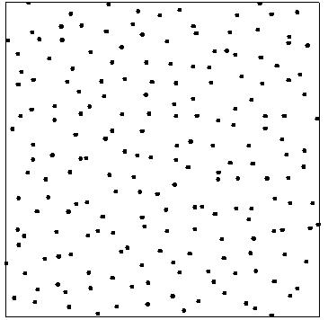
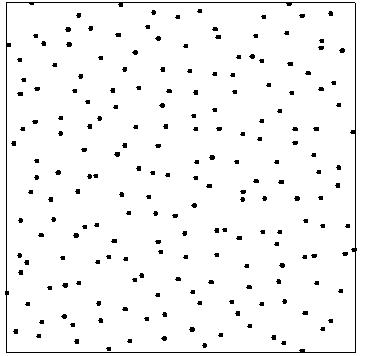

Subhroshekhar Ghosh
National University of Singapore
Department of Mathematics
10 Lower Kent Ridge Road
Singapore 119076
Email: subhrowork (**at**) gmail.com matghos (**at**) nus.edu.sg Phone: +65-8876-0149
Subhroshekhar Ghosh
National University of Singapore
Department of Mathematics
10 Lower Kent Ridge Road
Singapore 119076
Email: subhrowork (**at**) gmail.com
matghos (**at**) nus.edu.sg
Phone: +65-8876-0149
About me
 

 Left to right: Poisson point process, Ginibre eigenvalues and Gaussian zeroes
Left to right: Poisson point process, Ginibre eigenvalues and Gaussian zeroes